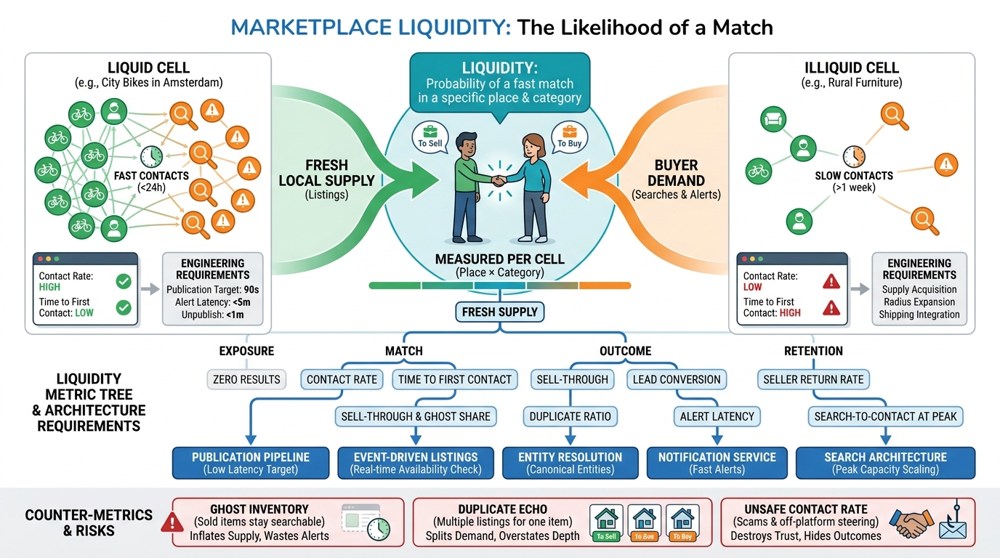

Part I — MARKETPLACE: The Business Behind the Listings
Liquidity Is the Product: Network Effects, Local Markets and Marketplace Metrics

Image generated by Google Gemini (gemini-3-pro-image-preview)
Part I — MARKETPLACE: The Business Behind the Listings

Image generated by Google Gemini (gemini-3-pro-image-preview)